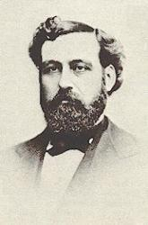

|
|
|
|
1. The whole world was lost in the darkness of sin, |
|
|
https://www.zanmeishige.com/tab/26047.html?songbook=1&index=472
|
|
|
|
|
|
|
|
|
1. The whole world was lost in the darkness of sin, |
|
|
https://www.zanmeishige.com/tab/26047.html?songbook=1&index=472
|
|
|
|
|
https://hymnary.org/person/Bliss_Philip

比利思在他所处的年代，是一最著名和最受爱戴的圣诗作曲家和音乐教师。他的音乐活动从纽约开始，至威斯康辛、密西根、芝加哥和阿拉巴马等地。他写了许多歌曲并出版过四册歌集。一八六九年他在芝加哥青年会活动中认识了布道家慕迪，慕迪经常邀请他在礼拜聚会中担任独唱。慕迪应邀赴英国布道时，曾聘请比利思做音乐指挥。比利思虽然没有承诺，但他还是听从慕迪的劝导，辞去教师的职务，担任了著名布道家威涛( D. W. Whittle)的唱歌指挥。一八七四年比利思编了一本圣歌集，名叫《福音诗歌》（Gospel Songs）。他是个多产作曲家，能兼写词曲，下列福音圣诗都是他所作，曲调都很流畅。
作曲：
| Text: | The Light of the World Is Jesus |
| Author: | Philip P. Bliss |
| Tune: | [The whole world was lost in the darkness of sin] |
| Composer: | Philip P. Bliss |
BY C. MICHAEL HAWN

“Jesus, the Light of the World” (“Hark! The Herald Angels Sing”)
by Charles Wesley, adpt./arr. George D. Elderkin
Africana Hymnal, 4038
Zion Still Sings, 62
Hark the herald angels sing.
Jesus, the light of the world.
Glory to the newborn King,
Jesus, the Light of the world.
Refrain:
We’ll walk in the light, beautiful light.
Come where the dewdrops of mercy shine bright.
Shine all around me by day and by night.
Jesus, the Light of the world.
African American musical traditions have enlivened eighteenth-century hymns for more than one hundred-fifty years. The hymns of John Newton (1725–1807), Isaac Watts (1674–1748), and Charles Wesley (1707–1788) were heard by enslaved Africans and reinvented and reinterpreted for their context. The enlivening of these and other hymns by classic white hymn writers continued during Reconstruction and into the emerging gospel song era. National Baptist Convention, U.S.A. icon Lucie Eddie Campbell-Williams (1885–1963) is credited with bringing in the “new gospel music” to African American congregations (George, 1992, 119). African American musical scholar Horace Clarence Boyer asserts that Campbell’s greatest contribution to gospel music was the “gospel waltz”—the transformation of black or white hymns written in 3/4 or 4/4 meters into the compound triple musical meters of 9/8 and 12/8 respectively (Boyer, 1992, 102–103).
George D. Elderkin (1845–1928) captures the essence of the “gospel waltz” in his adaptation of Charles Wesley’s classic nativity hymn “Hark! the Herald Angels Sing.” The origins and history of Wesley’s hymn are covered elsewhere (see "History of Hymns: 'Hark! the Herald Angels Sing.'"). Elderkin’s adaptation of the famous Christmas hymn has become a classic in its own right, especially in the African American community, although he was not an African American. Little is known of him except that he was the owner of the George D. Elderkin Publishing Company (Chicago), which published four volumes of gospel hymns titled The Finest of the Wheat (Brink, Hymnary.org, n.p.). The subtitle of the collections indicated the audience: “for prayer and evangelistic meetings, church and missionary services, Sunday schools and young people’s societies.” Among the editors of the collections was the prominent William. J. Kirkpatrick (1838–1921), who worked with (Fanny Crosby 1820–1915) to edit and publish her texts.
This adaptation of Charles Wesley’s hymn appears first as no. 35 in Gift of Finest Wheat (Chicago, 1890). Elderkin is listed as the arranger and the copyright holder of the arrangement. The four stanzas in Elderkin’s adaptation draw upon the first two lines of Wesley’s stanzas 1, 2, 3, and 5, the exception being that Elderkin, of course, does not use the original opening line composed by Wesley—“Hark how all the welkin rings”—but modified first lines by evangelist George Whitefield (1714–1770) that are now commonly sung.
Elderkin’s adaptation is a standard approach to modifying a classic hymn in stanzas to a gospel song. Two lines are chosen from the original stanza and become lines one and three. Lines two and four are drawn from a standard refrain based on a trope used in gospel songs of the day. The resulting textual form was ABCB. To this revised stanza was attached a substantial refrain or chorus. These choruses often had a life of their own, migrating from song to song with little or no change. Camp meeting spiritual scholar Ellen Jane Lorenz (1907–1996) calls the original hymn text the “mother hymn” (Lorenz, 1980, p. 52).
A well-known example is the camp meeting-style version of Charles Wesley’s “O for a Thousand Tongues to Sing” (1740). Ralph E. Hudson (1843–1901) adapted the original in the manner described above:
O for a thousand tongues to sing,
Blessed be the name of the Lord!
The glories of my God and King,
Blessed be the name of the Lord!
Refrain:
Blessed be the name,
Blessed be the name,
Blessed be the name of the Lord!
Blessed be the name,
Blessed be the name,
Blessed be the name of the Lord!
Carl P. Daw Jr. ably traces a “cluster of songs” around the refrain “Jesus, the light of the world” (Daw, 2016, p. 131), derived from John 8:12, one of Christ’s “I AM” sayings. His refrain, possibly the earliest, was “borrowed” for numerous other songs. Despite Elderkin’s copyright, his contribution was ignored, even though the “borrower” quoted the text of his refrain and his music with little or no modification. The music was often listed anonymously as “Arranged.”
However, an earlier publication suggests that Elderkin may have adapted the
text, though not the music, of a Fanny Crosby text set to different music by
one of her regular associates, William H. Doane (1832–1915). It is found in Good
as Gold: A New Collection of Sunday School Songs (New York, 1880) edited
by Doane and famous gospel song composer Robert Lowry (1826–1899). Crosby’s
text follows:
Shining in darkness by faith we behold
Jesus, the Light of the world;
Jesus, the brightness of glory untold,
Jesus, the Light of the world.
Refrain:
O walk in the beautiful light
That comes with the dew drops of mercy imparted;
It shineth around us by day and by night,
‘Tis Jesus, the Light of the world.
Carl Daw offers a wise word in our attempt to understand the creative threads that come together in Elderkin’s adaptation:
[I]t is important to recognize that Elderkin himself never claimed authorship for this text, probably because he expected people to know the two strands from which it was woven. On both words and music credit lines he printed only his initials, followed in both instances by “arr.” Yet he was also careful to protect the fruit of his creativity in bringing them together; the copyright notice in his name at the bottom of the page stakes his claim to this combination. (Daw, 2016, p. 131).
The Africana Hymnal (Nashville, 2015) follows the recent pattern of employing the harmonization by well-known composer and performer Evelyn Simpson-Curenton (b. 1953), known for her arrangements of spirituals for some of the great African American performers of this era, including Kathleen Battle and Jessye Norman. Simpson-Curenton’s arrangement “updates” the Elderkin’s gospel style with more chromatic chordal alterations. The accompaniment edition provided by the arranger is independent of the four-part vocal setting, adding more harmonic movement. In addition, she employs shortened eighth notes (followed by an eighth rest) characteristic of recent African American gospel styles on several words in the refrain: “walk,” “light,” “beau” (of beautiful), “Come,” “drops” (of “dewdrops”), “Shine,” and “us.” Elderkin included a fermata over the first word of the refrain— “We’ll”—breaking the rhythm of the “gospel waltz” and announcing the refrain. Rather than a fermata, Simpson-Curenton gives the note a full measure (three beats) on “We’ll,” creating a similar effect.
Aspects of Simpson-Curenton’s gospel style are captured in a performance of the song led by Bill Gaither featuring Jessy Dixon as soloist: https://www.youtube.com/watch?v=6UsxxAYReP4&feature=emb_title. A more up-beat interpretation is available at https://www.youtube.com/watch?v=rcU59_T32I8&feature=emb_title. A more standard performance at Alfred Street Baptist Church (Alexandria, VA) can be heard at the following link with characteristic clapping on the refrain, emphasizing the “gospel waltz”: https://www.youtube.com/watch?v=Fec8W2xeB18&feature=emb_title.
Elderkin’s arrangement should not be confused with “See the bright and morning star” (Worship and Song, 3056) by Ken Bible (b. 1950). Bible adds new words for lines one and three of his three stanzas and makes a slight modification to the refrain. He maintains the same music. Since his text relates to the refrain “Jesus, the Light of the world,” his hymn might be called a parody of Elderkin’s arrangement.
Horace Clarence Boyer, “‘Lucie E. Campbell”: Composer for the National Baptist Convention,” in Bernice Johnson Reagon, ed., We’ll Understand It Better By and By: Pioneering African American Gospel Composers (Washington, D.C.: The Smithsonian Press, 1992), 81–108.
Emily Brink, “Geo. D. Elderkin,” Hymnary.org, https://hymnary.org/person/Elderkin_George (accessed October 19, 2020).
Carl P. Daw, Jr., Glory to God: A Companion (Louisville: Westminster John Knox, 2016).
C. Michael Hawn, “Hark! the Herald Angels Sing,” History of Hymns (December 11, 2014) [Nashville: Discipleship Ministries], https://www.umcdiscipleship.org/resources/history-of-hymns-hark-the-herald-angels-sing (accessed October 19, 2020).
https://www.umcdiscipleship.org/articles/history-of-hymns-jesus-the-light-of-the-world
Words: Philip Paul Bliss (b. July 9, 1938; d. Dec. 29, 1876)
Music: Philip Paul Bliss
Links:
Wordwise Hymns (Philip Bliss died)
The Cyber Hymnal
Hymnary.org
Note: According to the Cyber Hymnal, this hymn was published in 1875, a year before Bliss’s tragic death. However, Hymnnary.org shows it in a book five years before that. There is an incident in Bliss’s life which suggests the later date is the correct one. Perhaps the hymn book date is a printing error.
One day in the summer of 1875, in the Blisses home in Chicago, he was walking down the hall to his bedroom when the idea for a new song came to him. We cannot know for certain, but it could well be the light in the hall–or lack of it–that turned his thoughts in that direction. Thomas Edison’s invention of the incandescent light bulb lay several years in the future, so Mr. Bliss was likely relying on a lamp or a candle. He immediately thought of Christ’s great statement that He is “the light of the world.” And out of that experience Philip Bliss created both words and music for the present song.
CH-1) The whole world was lost
In the darkness of sin,
The Light of the world is Jesus!
Like sunshine at noonday,
His glory shone in.
The Light of the world is Jesus!
Come to the light, ’tis shining for thee;
Sweetly the light has dawned upon me.
Once I was blind, but now I can see:
The Light of the world is Jesus!
Adozen times this simple gospel song tells us that the Lord Jesus is the Light of the world, reiterating what He Himself said (Jn. 8:12).
Various forms of the words light and dark are found all through the Word of God (over two dozen times each in the New Testament epistles alone). Sometimes they speak of the physical light and darkness of day and night. But when the words are used in a symbolic way, they are used to contrast the following things (cf. Ps. 36:9; 119:105, 130; Prov. 4:18; Jn. 8:12; 12:46; I Jn. 1:5-7):
¤ Light – righteousness, purity, truth, honesty, life, salvation
¤ Darkness – sin, impurity, ignorance, deceit, death, condemnation
There are many kinds of man-made lights in the world. Human ingenuity and exertion has produced some amazing things. But compared to the eternal glory of God, the lights of man are darkness, and the world is “a dark place” (II Pet. 1:19). That’s even more true spiritually. Nor can we, spiritually, by human effort, gain the light of life, make ourselves acceptable to God, or gain an entry into heaven.
The Lord Jesus came to this earth to bring light. He says, “I am the light of the world. He who follows Me shall not walk in darkness, but have the light of life” (Jn. 8:12). The gospel, the good news of salvation in Christ, is meant to “turn [individuals] from darkness to light” (Acts 26:18). Through personal faith in Christ as Saviour we receive that light, and Christians are able to say, “He has delivered us from the power of darkness and conveyed us into the kingdom of the Son of His love” (Col. 1:13; cf. I Pet. 2:19).
In the world of nature, the sun is the source of light; the moon has no light in itself, but reflects the light of the sun. Similarly, though the Lord Himself is the Source of spiritual light, a number of texts speak of believers as being given that light, bearing and sharing God’s light (Matt. 5:16; Eph. 5:8; Phil. 2:15).
CH-2) No darkness have we
Who in Jesus abide;
The Light of the world is Jesus!
We walk in the light
When we follow our Guide!
The Light of the world is Jesus!
CH-3) Ye dwellers in darkness
With sin blinded eyes,
The Light of the world is Jesus!
Go, wash, at His bidding,
And light will arise.
The Light of the world is Jesus!
Questions:
1) Why is light a good symbol for the list of six things given above?
2) Why is darkness a good symbol for the six things listed above?
https://wordwisehymns.com/2014/11/17/the-light-of-the-world-is-jesus/
"THE LIGHT OF THE WORLD IS JESUS"
"…I am the light of the world…" (Jn. 8.12)
INTRO.:
A song which is based upon the idea of Jesus as the light of the world is "The Light of the World Is Jesus" (#537 in Sacred Selections for the Church). The text was written and the tune was composed both by Philip Paul Bliss (1838-1876). Born in Pennsylvania, Bliss became one of the best-known gospel song writers in the mid to late 1800’s as a result of his association with the evangelistic campaigns of revival evangelists Dwight L. Moody and Daniel W. Whittle. For the most part, Bliss produced both words and music for most of his songs, but occasionally would provide a tune for the text of another, and at his tragic death left some poems that were set to music by others.
Whittle, in his Memoirs of Philip P. Bliss, written in 1877, stated, "’The Light of the World Is Jesus’ was written in the summer of 1875, at his home, No. 664 West Monroe Street, Chicago. It came to him all together, words and music, one morning while passing through the hall to his room, and was at once written out." It first appeared in The International Lessons Monthly of 1875. Its first hymnbook publication was that same year in Gospel Hymns and Sacred Songs No. 1. Bliss and his wife were killed in a train wreck near Ashtabula, OH, when returning to Chicago from a holiday visiting with family in Pennsylvania. He was only 38.
Among hymnbooks published by members of the Lord’s church during the twentieth century for use in churches of Christ, "The Light of the World Is Jesus" is found in only two that I know of–the 1956 Sacred Selections of Ellis Crum and the 1971 Songs of the Church edited by Alton H. Howard. However, those two books held almost universal sway among churches of Christ in the 1970’s and 1980’s, and are still used by many. As a result the song is quite well-known among us in a number of places.
The song points our minds to Jesus Christ as the light of the world.
I. Stanza 1 says that Christ’s light shines in the darkness of sin
"The whole world was lost in the darkness of sin;
The Light of the world is Jesus;
Like sunshine at noonday His glory shone in;
The Light of the world is Jesus."
A. To be lost here means to be outside of Christ, aliens from God, and without
hope: Lk. 15.24, Eph. 2.11-12
B. The reason why the whole world was lost is that it was in the darkness,
which is representative of sin: Jn. 3.19-21, Rom. 3.23
C. Yet, into this darkness, the light of the the glory of Christ has shone in
like sunshine at noonday: Jn. 1.4-5, 14
II. Stanza 2 says that Christ’s light provide guidance to us
"No darkness have we who in Jesus abide,
The Light of the world is Jesus;
We walk in the Light when we follow our Guide,
The Light of the world is Jesus."
A. Since God is light and in Him is no darkness at all, as long as we abide in
Jesus, we have no darkness: 1 Jn. 1.5-6
B. Therefore, it should be our aim to walk in the Light: 1 Jn. 1.7
C. The means by which Jesus guides us with a lamp to our feet and a light to
our pathway is God’s word or truth in which we are to walk: Ps. 119.105, 3 Jn.
vs. 3-4
III. Stanza 3 says that Christ’s light enables us to see
"Ye dwellers in darkness with sin-blinded eyes,
The Light of the world is Jesus;
Go, wash, at His bidding, and light will arise,
The Light of the world is Jesus."
A. Those who live in sin are likened to people whose eyes have been darkened by
darkness: Eph. 4.17-19
B. However, Jesus has the power to make our spiritual eyes see again, if we let
Him, just as He made the physical eyes of the blind man see: Jn. 9.1-7
C. Yet, as the blind man was told to go and wash in the pool of Siloam, so we
must come to Christ and meet His conditions to have our sin-blinded eyes opened:
2 Cor. 4.3-4, Eph. 5.8-14
IV. Stanza 4 says that Christ’s light will continue to shine forever in heaven
"No need of the sunlight in heaven, we’re told,
The Light of the world is Jesus;
The Lamb is the Light in the City of Gold,
The Light of the world is Jesus."
A. As John describes the new heaven and new earth, the New Jerusalem, he says
that the city had no need of the sun or of the oon to shine in it: Rev. 21.23
B. The reason for this is the Lamb, an obvious reference to Jesus Christ: Jn.
1.29, Rev. 5.6-12
C. Because the Lamb is its light, there will be no night there: Rev. 21.25,
22.1-5
CONCL.:
The chorus then invites all to come to this light:
"Come to the light, ’tis shining for thee;
Sweetly the Light has dawned upon me;
Once I was blind, but now I can see;
The Light of the world is Jesus."
Sometimes this hymn has been used as an invitation song, and it can be a very
effective one. It should also encourage Christians to recognize the importance
of sharing to a sin-cursed world dwelling in darkness that "The Light of the
World Is Jesus."
https://hymnstudiesblog.wordpress.com/2009/06/17/quotthe-light-of-the-world-is-jesusquot/